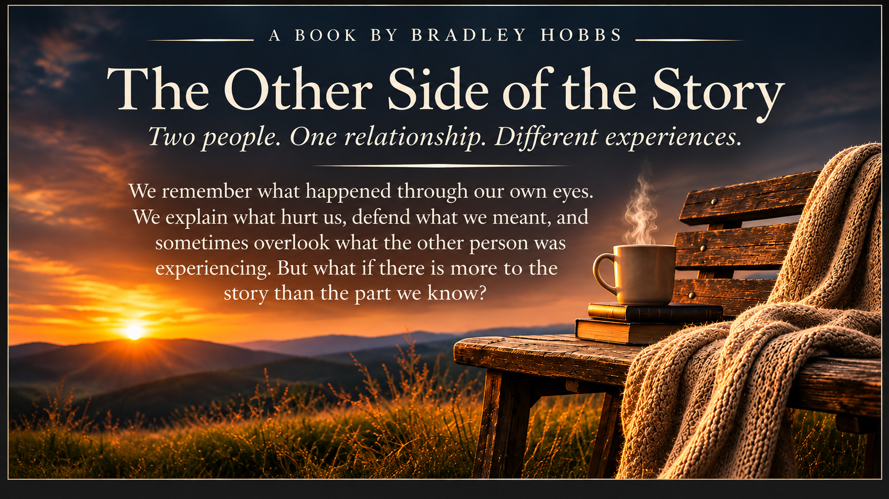

One perspective
What I experienced
The moments I remember, the words that stayed with me, the expectations I carried, and the times I felt unheard or misunderstood.
Sometimes understanding begins with listening.

Two people can share the same conversation and walk away remembering it differently. One may remember the words that were spoken. The other may remember the silence that followed. Both may feel hurt. Both may believe they tried. And both may be missing something the other has been trying to say.
This book invites us to slow down and look again. Not to excuse hurtful behavior or decide who is always right, but to consider how assumptions, expectations, unspoken feelings, and everyday choices shape the relationships we share.
Seeing another perspective does not erase your own. It gives you a fuller picture of what may have happened between you.
The moments I remember, the words that stayed with me, the expectations I carried, and the times I felt unheard or misunderstood.
The pressures I may not have noticed, the feelings that were difficult to express, and the meaning you gave to moments I understood differently.
There are car rides, shared meals, familiar jokes, ordinary afternoons, and stretches of comfortable silence. There is time spent together simply because friendship and connection matter, even when things are not perfectly settled.
Sometimes a conversation begins when nobody planned one. Sometimes the drive itself is enough. Both kinds of moments belong in a real relationship.
Laughing, going places, sharing a meal, and remembering that people are more than the disagreements they are trying to work through.
As a friend to both, her brother can bring them together, ask honest questions, challenge assumptions, and help them face reality without choosing sides.
This landing page is only the beginning. Explore the book, meet its author, read the opening, and take time with the questions each chapter raises.
Explore the chapter directory and follow the story from its difficult beginnings toward greater clarity and understanding.
View the ContentsLearn more about the ideas, relationships, and questions at the center of The Other Side of the Story.
About the BookStep into the story and consider what it means to hear more than one side of an experience.
Read the IntroductionPause with questions that invite honest thought about communication, responsibility, and understanding.
Explore ReflectionsThe way forward may ask for honest conversations, personal responsibility, patience, and a willingness to change. For some, prayer and faith in Jesus may also become a source of comfort and guidance. None of these things can make another person's choices for them, but they can help someone find the courage to take the next honest step.
Continue to the Contents